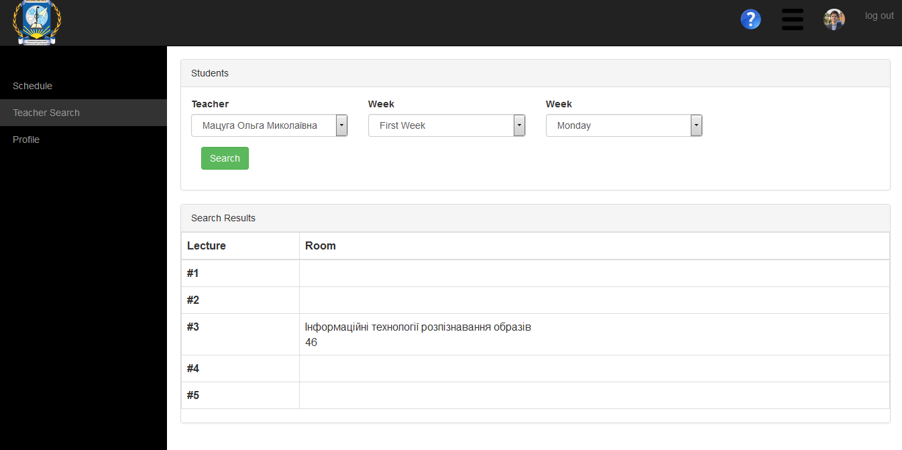
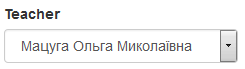
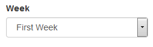
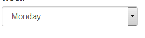

Сторінка пошуку викладачів
На сторінці пошуку викладачів студент може знайти у якій аудиторії знаходиться викладач на певній парі у певний день.

Щоб здійснити пошук необхідно:
Обрати викладача з випадаючого списку

Вказати за який тиждень необхідно здійснити пошук чисельник/знаменник

Вказати день тижня у який треба здійснити пошук

Натиснути зелену кнопку Search
Created with the Personal Edition of HelpNDoc: Easily create EPub books